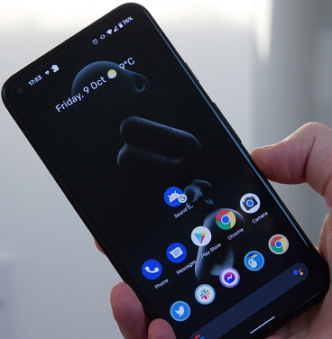

Latest Feed 🔥
As we all know, Nowadays, For progressive future everyone is shifting towards better work complimenting gadgets especially youth tends to upgrade whenever a cool gadget turnsup in the market which is self governing how this market are very competitive ,compelling and replaceable.
For a smarter future everything is in its own element, self paced and growing to provide best output. Majority of the people chooses tabs over laptop and smartphones ,we can say that with tab in procession we can get the best of the two worlds.Key major factors for tabs are- reliability,handiness,performance,super-flexible,portability.
If someone thinks about tablet one can’t talk about tablets without mentioning Apple.
APPLE is killing it in tablet section with their regular software updates and user support they are ahead of their game.The mass acceptance among artitists is one of the key factors of successful product.
Also,accessories which supports these tabs are very well built ,accuracy of pencil is seamingly awesome .It supports keyboard which can easily attach to it with the help of built-in magnets it’s futuristic and cool.
Image credits:
Xiaomi IndiaSpecifications of xiaomi pad 5 | |
|---|---|
| Dimensions- | Height: 254.69mm Width: 166.25mm Thickness: 6.85mm Weight: 511g |
| Display- | Size: 27.81cm(10.95) Resolution: 1600 x 2560 (WQHD+) 275 ppi Refresh rate: 120Hz Brightness : 500nits (typ), Over 1 billion colors Supports DCI-P3 |
| Processor- | Qualcomm® Snapdragon™ 860 |
| Camera- | Rear camera: 13MP
4k | 30fps
1080p | 30fps
720p | 30fps Front camera: 8 MP 1080p | 30fps 720p | 30fps |
| Speaker- | 4 speakers Dolby Atmos® supported |
| Storage & RAM- | 6GB+128GB, 6GB+256GB LPDDR4X RAM + UFS 3.1 storage *Available storage and RAM are less than the total memory due to storage of the operating system and software pre-installed on the device. |
| Battery- | 8720mAh (typ) |
| Connectivity- | Bluetooth 5.0 Wi-Fi Protocol 802.11a/b/g/n/ac USB-C |
| Operating System- | MIUI for Pad |
| Package contents- | Xiaomi Pad 5 / Adapter / USB Type-C Cable / Quick Start Guide / Warranty Card |
Unboxing + Mini Review-
Video credits:
YT Channel:-GadgetByteThe best small phones still offer some powerful hardware and great features, despite being a touch smaller than the competition.
The options may be fewer, but the best small phones still pack a punch. For the purposes of this roundup, we're considering any phone with a screen size of 6-inches or below to be small.
If you have an older smartphone, that may still sound big to you. However, compared to the 6.8-inch Samsung Galaxy S22 Ultra or the 6.7-inch iPhone 13 Pro Max, these are fairly small phones.
For those wanting something even smaller, there's always the 4.7-inch iPhone SE (2022) or iPhone 13 mini with its 5.4-inch screen.
Read on below to see where the iPhone SE (2022) fits into our rankings along with the larger but still small Google Pixel 5 at the 6-inch end. All the best small phones here are easier to use with one hand than most, and remarkably compact too.
♦ iPhone 13

SPECIFICATIONS:--
Weight: 131g
Dimensions: 131.5 x 64.2 x 7.7
mmOS: iOS 15
Screen size: 5.4-inch
Resolution: 1080 x 2340
CPU: A15 Bionic
RAM: 4GB
Storage: 128GB/256GB/512GB
Battery: 2,438 mAhRear
camera: 12MP+12MP
Front camera: 12MP
The iPhone 13 mini is a rare small phone that's still high-end when it comes to hardware. Its 5.4-inch display is a Super Retina XDR OLED display so it looks great, thanks to some strong brightness levels. It's the same tech as you'd see on the iPhone 13, only smaller.
Similarly, its camera is fairly potent. It has a 12MP f/1.6 wide camera with 1.7µm pixels for low-light performance, while the 12MP f/2.4 ultra-wide camera offers 120-degree field of view.Taking photos in low light situations works well too, easily being some of the best we've seen.
Speed wise, the iPhone 13 mini uses Apple's A15 Bionic chipset so it's fast and easily capable of multitasking. iOS 15 works super smoothly here. Just count on paying for the privilege as it's pricier than the iPhone 12 mini that came before it.
♦ Google pixel 5
SPECIFICATIONS:--
Release date: October 2020
Weight: 151g
Dimensions: 144.7mm x 70.4mm x 8mmOS: Android 11
Screen size: 6.0-inch
Resolution: 1080 x 2340CPU: Snapdragon 765G
RAM: 8GB
Storage: 128GB
Battery: 4000mAh
Rear camera: 16MP + 12.2MP
Front camera: 8MP
With its 6.0-inch screen the Google Pixel 5 only just squeezes onto this list, but its tiny bezels means there’s no wasted space, and the screen itself impresses. It’s a 1080 x 2340 OLED one with a 90Hz refresh rate, which leaves it feeling smoother than a typical 60Hz phone.
The Pixel 5 also has a high-end and slightly unusual design, as it has a metal rear where most phones use glass or plastic. This helps it stand out, and that’s a good thing in our view.
The camera experience really shines here too, as is usual with Google phones. There’s just a dual-lens snapper on the back, with a 12.2MP main and 16MP ultra-wide included, but the pictures taken mostly come out well, other than a bit of noise in low light, and the phone is also packed full of easy-to-use image editing tools.
There’s perhaps less power here than you might expect from the top 2020 Pixel, as it has just an upper mid-range Snapdragon 765G chipset, but the Pixel 5 is priced accordingly, and still has 8GB of RAM and 5G.
♦ Samsung Galaxy S10e
SPECIFICATIONS:--
Release date: March 2019
Weight: 150g
Dimensions: 142.2 x 69.9 x 7.9mm
OS: Android 11
Screen size: 5.8-inch
Resolution: 1080 x 2280
CPU: Snapdragon 855 / Exynos 9820RAM: 6/8GB
Storage: 128/256GB
Battery: 3,100mAh
Rear camera: 12MP + 16MP
Front camera: 10MP
The Samsung Galaxy S10e is getting on a bit now, but if you want a compact Galaxy S phone this remains your best option.
As a member of the S range it’s reasonably high-end, with either 6GB or 8GB of RAM and an Exynos 9820 or Snapdragon 855 chipset. Which chipset you get depends on where you are in the world, but both rank among the best of this phone’s release year (2019).
The Samsung Galaxy S10e also has a 5.8-inch 1080 x 2280 AMOLED screen, which we found to offer bright colors and crisp detail. And there’s an excellent dual-lens camera, including 12MP main and 16MP ultra-wide snappers, plus all-day battery life.
The Galaxy S10e even has a decent build, with a glass back, a metal frame, and water resistance. Sure, it lacks a few of the bells and whistles of the Samsung Galaxy S10 and Samsung Galaxy S10 Plus, and it’s no longer the newest phone on the block, but that just means it’s cheaper.
♦ Google Pixel 4a
SPECIFICATIONS:--
Release date: August 2020
Weight: 143g
Dimensions: 144 x 69.4 x 8.2mm
OS: Android 11
Screen size: 5.81-inch
Resolution: 1080 x 2340
CPU: Snapdragon 730G
RAM: 6GB
Storage: 128GB
Battery: 3,140mAh
Rear camera: 12.2MP
Front camera: 8MP
The Google Pixel 4a is Google’s rival to the iPhone 12 mini, though at 5.81 inches the Pixel’s screen is quite a bit bigger.
It’s still small though, and there’s a lot to like here – including that display, which uses OLED tech and at 1080 x 2340 is fairly sharp.
For the money we were also very impressed with the camera, as while there’s just a 12.2MP single-lens one on the back (and an 8MP one on the front) it performs well, with good image processing and decent results even in low light.
The Google Pixel 4a also has a headphone jack, which is an increasingly rare feature in phones, and its software is a definite strength, as it runs stock Android, which is more intuitive than many manufacturer overlays. As this is a Google phone you can also expect a day one update to the next software version.
Its power, battery life, and build are all middling, but then this comes in at a middling price, so that’s forgivable. Note also that we’re just talking about the standard Pixel 4a here, not the Pixel 4a 5G, which is slightly too big to make this list.
♦ Sony Xperia 10III
SPECIFICATIONS:--
Release date: April 2021
Weight: 169g
Dimensions: 154 x 68 x 8.3 mm
OS: Android 11
Screen size: 6.0-inch
Resolution: 1080 x 2520
CPU: Snapdragon 690 5G
RAM: 6GB
Storage: 64/128GB
Battery: 4,500mAh
Rear camera: 12MP + 8MP + 8MP
Front camera: 8MP
The Sony Xperia 10 III isn't a great phone but if size is everything, its mature design makes up for some flaws. Dodging past its poor camera, slow charging, and mediocre processor, its 6-inch display squeezes into a design that's just 68mm wide, only slightly wider than the iPhone SE (2020).
With a classic Sony style, it looks good, with decent build quality including Gorilla Glass 6 and IP 68/65 water resistance. A sharp full HD OLED panel looks great too. It offers a 21:9 aspect ratio that's perfectly suited for landscape content and watching movies.
Just don't expect great performance from this one. The camera in particular is pretty weak.
♦ iPhone 12 mini
SPECIFICATIONS:--
Weight: 135g
Dimensions: 131.5mm x 64.2mm x 7.4mm
OS: iOS 14
Screen size: 5.4-inch
Resolution: 1080 x 2340
CPU: A14 Bionic
RAM: 4GB
Storage: 64GB/128GB/256GB
Battery: Unknown
Rear camera: 12MP+12MP
Front camera: 12MP
The iPhone 12 mini is that rare thing – a phone that’s not only genuinely small, but also genuinely high-end. As the name suggests, it’s basically the iPhone 12 in a smaller size, with a 5.4-inch 1080 x 2340 OLED screen.
That’s a high-quality display, and while it’s bigger than the screen on the iPhone SE (2020), the relative lack of bezels means the iPhone 12 mini is actually a smaller phone overall.
Beyond the screen and the size, highlights of the iPhone 12 mini include its 5G support, its MagSafe tech which lets you magnetically attach accessories, and its top-tier power, provided by an A14 Bionic chipset (the same one as you’ll find in the rest of the iPhone 12 range).
The camera is highly capable too, albeit only packing two rear lenses – you get a 12MP main and 12MP ultra-wide shooter, so it lacks for telephoto skills.
We’d like to have seen slightly better battery life, and the 64GB starting size is entirely too low, especially for the price, but those niggles aside the iPhone 12 mini is a superb small phone.